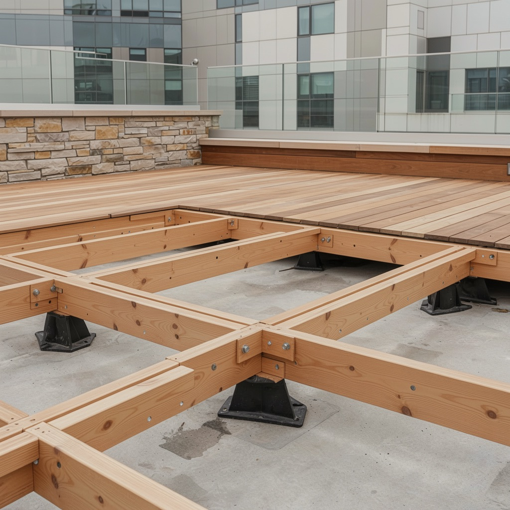
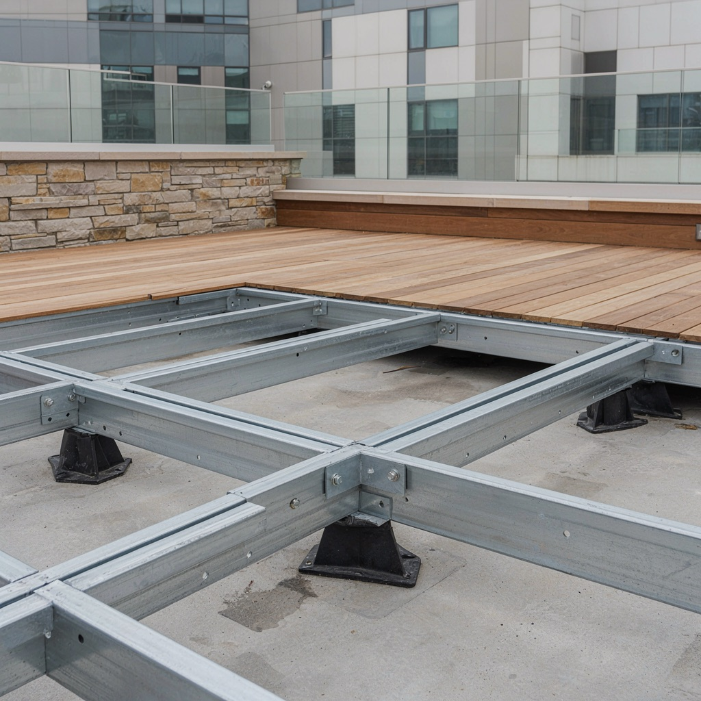

Catálogo/Piso de madeira
Detalhamento
Dezesseis desenhos, uma seção só.
Toda prancha deste pacote é a mesma seção — contrapiso regularizado, cola PU e assoalho Parket apoiado em toda a face, sem vão e sem sarrafo, que é o que dá o som cheio ao pisar. Do contrapiso ao rodapé, o que muda de uma para a outra é uma coisa só de lugar. Escolha o detalhe à esquerda: a pilha ao lado acende a camada em que ele mexe.
Duas decisões não viram desenho nesta lista porque são de planta, e não de corte. A primeira é a paginação — reta, chevron, espinha de peixe, tabeira, versailles ou wood + marble: nenhuma delas muda a seção; mudam o corte, a perda e o ponto de partida. A segunda é esse ponto de partida. De onde sai a primeira régua definem-se o sentido das emendas, a régua que sobra na parede oposta e onde caem os cortes contra portas e soleiras. Marca-se no projeto; na obra já é tarde.
Piso elevado
O pedestal é o mesmo. A viga é que muda.
Duas estruturasDos dezesseis detalhes, este é o que mais mexe no prédio — por isso ganha foto e não só corte. Os dois sistemas partem do mesmo apoio regulável sobre a laje. O que os separa é o que se apoia em cima dele, e é essa peça que decide altura, vão e prazo.


Pré-projeto de obra
Antes da régua, o contrapiso.
Clique em cada etapaNada do que você escolheu acima sobrevive a uma base mal preparada. Estas cinco etapas acontecem antes de a madeira entrar na obra — e nenhuma tem segunda chance depois do piso instalado.